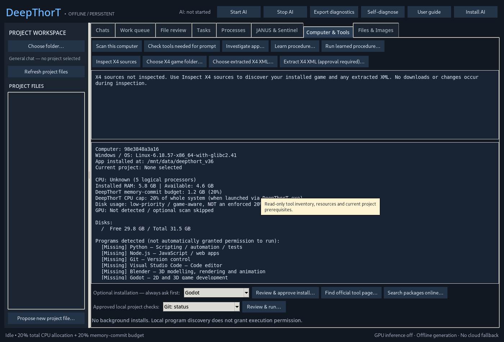

1. Find your way around
This is a schematic diagram of the desktop layout, not a live screenshot. Buttons and tabs are labelled to match v36. Your live statuses and selected files will differ.
① Workspace
Choose the one project directory containing the files to review or change. The left tree shows file selection and previews; selecting a file does not grant permission to overwrite it.
② Tabs
Each tab has a different job. Hover over a tab or button and hold the pointer to see a short explanation. Tooltips do not launch actions.
③ Conversation
Request explanations, requirements analysis and planning. A reply is only a reply; it is not equivalent to completed or tested changes.
④ Execution gates
Draft plans first, review carefully, then approve an actual milestone or individual file change. Revisions and tool commands have separate approval paths.
Actual v36 desktop window
This image was captured directly from the shipped Tk desktop in a local test display with a taller window. The model is not started, no project is selected, and there are no fabricated progress numbers.

Real v36 interface capture — 1320 × 960 virtual display. Hover help appears in the actual app, not in this static picture.
2. Your first project, step by step
3. What each tab does
Chats
Saved conversations, specification import, attachments, independent model replies, planning and file revision requests. The chat is not a shell and cannot silently change your project.
Work queue
Persistent jobs, status, pause/resume, legacy-plan review and approved verification. A queued job can be waiting for the model or approval.
File review
Read a proposed source file, inspect its changes, then explicitly apply an approved edit. Existing content is backed up by the workspace writer.
Tasks
Manual task tracking per workspace. A checked box does not prove implementation or testing; link real verification evidence to actual milestones.
Processes
Timestamped actual runtime events, process results and cancel controls. Use this when something appears stuck. Termination may leave partial outputs.
JANUS & Sentinel
Persistent coordinator state, two eleven-core societies, supervisory findings, actionable processes and their real statuses. Model-suggested fixes are not executed automatically.
Computer & Tools
Installed software, hardware, tool requirements, approved application help and learned procedures. X4-specific source inspection and approved local checks live here too.
Files & Images
Documents and image selection. Optional local PDF/vision/image-generation tools need installation and may be slower than cloud services. No cloud image call is implicit.
4. Learn the permission boundaries
| Action | What happens | What does not happen |
|---|---|---|
| Send message | Offline model generates an answer. | No project files are written automatically. |
| Draft project plan | Qwen proposes a plan from source requirements. | Unapproved plan is not a build. |
| Approve plan & queue | Stage an explicitly approved milestone. | Does not approve all later milestones or arbitrary commands. |
| Run learned procedure… (script) | First review and approve one script write, then separately authorize its exact command. | No auto-install, no reliable sandbox of authorized user scripts. |
| Review & approve install… | Prompt shows fixed Windows Package Manager ID and command, then runs after confirmation. | No silent background install; no arbitrary model-generated shell script. |
| Verify build | Runs the explicitly approved relevant test/check. | Passing a static XML check does not prove X4 gameplay; editor load does not prove an APK plays. |
5. Discover, learn and install software
NEXT_STEPS.md.6. What people might ask DeepThorT to create
The table identifies common project families and the kinds of toolchains that may be appropriate. It does not mean v36 can already build each entire artifact autonomously.
| Project family | Examples | Typical tools and verification |
|---|---|---|
| Games and mods | 2D/3D games, X4 extensions, RimWorld content, Android games | Godot, Unity, Blender, Android SDK, game-native asset/schema and runtime testing |
| Software and web | Windows apps, scripts, websites, APIs, extensions | Python, Node.js, Git, .NET, tests, browser runtime |
| Writing and publishing | Books, research compilations, EPUB, PDF, presentations | LibreOffice, Pandoc, layout checks, source/citation consistency |
| Art and 3D assets | Illustrations, textures, models, animations, 3D prints | Blender, Krita, GIMP, Inkscape, FreeCAD; render and export validation |
| Audio and video | Podcasts, sound effects, tracks, narrated video | Audacity, FFmpeg, DAWs, playback/codec and rights checks |
| Data, automation, science | Reports, dashboards, ETL, simulations, experiments | Python, SQL, notebooks, tests and reproducible datasets |
| Professional workflows | CAD, documentation, manufacturing, business workflows | Project-specific authenticated apps, approvals and format-specific validators |
7. Troubleshooting and tomorrow's test sequence
Model not starting or stuck loading?
Check Self-diagnose, then Processes and the model status. Ensure the optional model/dependencies are actually installed. Do not repeatedly erase the state or models folder to repair it.
Plan spends a long time attempting revisions?
Look for active reply status and real events. The v36 planning pipeline may make up to 40 model attempts, but stops if a valid plan is reached. Huge text is indexed into exact source sections; the local model still has a small immediate context window.
Tool procedure is "proposed" but nothing happens?
This is intentional. A proposal does not grant permission to write a script or run an external application. Review and approve the exact action separately.
Did "Verify build" certify my X4 mod or Android APK?
No. Read the evidence type and test output. Static X4 XML can detect some reference errors, but equipment, spawning and gameplay require the actual engine. Godot editor checks are not Android device tests.
What should I send when something fails?
Use Export diagnostics and provide the resulting ZIP along with the exact button pressed and expected outcome. The export is local; review it before sharing. No export uploads automatically.
Suggested short test run
D:\deepthort\state. Exit the old app and extract v36 over the install directory. Retain models, reference files, node_modules, cache and projects.8. Development status and next steps
Help and guarded lookup
Offline user guide, F1 shortcut, passive contextual hover tips for buttons and major areas, and confirmed official publisher page lookup for curated installer entries.
Build and tool learning
Local single Qwen model, staged plans, approved script writes/commands, fixed winget installs, selected engine checks, persistent JANUS/Sentinel observations.
Full autonomous delivery
Unrestricted tool discovery, vetted automated downloads, arbitrary GUI integration, sandboxed execution, guaranteed specification compliance and complete game delivery.
For an ordered engineering backlog, acceptance criteria and current limitations, open NEXT_STEPS.md in the DeepThorT install directory.